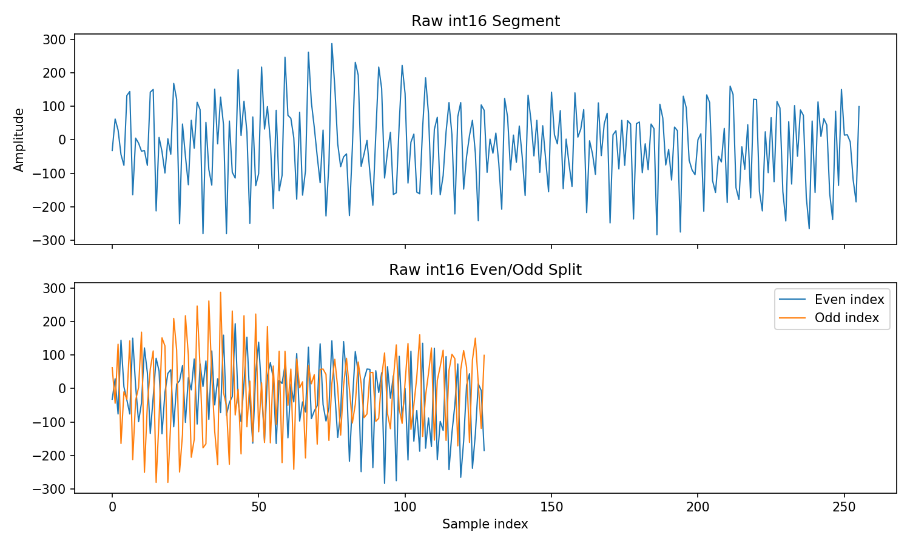

把文件里的整数还原成 I/Q 数据¶
这一章完成两件事：把整数配成复数，再给每个复数确定采样点、轮次和通道编号。完成后应得到 [256,128,12] 的单帧数组，供距离 FFT 使用。
1. 读文件之前，先确认格式¶
adc_data.bin 是采集下来的 ADC 数据文件。它不是串口输出的点云，也不能把带有网络包头的抓包文件直接当成它。至少要核实 ADC 是实数还是复数、有效位宽、字节序、LVDS 通道排列、启用的接收天线和 TX 发射顺序。对应说明见 TI 的 ADC 原始数据格式文档。
本项目按有符号 16 位整数读取，在当前 Windows 环境下使用小端字节序。更明确的教学写法如下；MATLAB 示例中的路径同样从项目根目录出发。
import numpy as np
raw = np.fromfile('project/data/raw/adc_data.bin', dtype='<i2')
per_frame = 256 * 128 * 12 * 2
assert raw.size % per_frame == 0
n_frames = raw.size // per_frame
fid = fopen('project/data/raw/adc_data.bin','r','ieee-le');
assert(fid ~= -1, 'Cannot open ADC file');
raw = fread(fid,Inf,'int16=>double');
fclose(fid);
perFrame = 256*128*12*2;
assert(mod(numel(raw),perFrame)==0);
nFrames = numel(raw)/perFrame;
两段代码只读文件，不改文件。长度检查通过，说明数据量与配置一致；它不能检查每个整数该属于哪个天线。
2. 四个整数怎样组成两个复数¶
IWR1443 / IWR1843：先核对这一处
IWR1443 支持 4 条 LVDS 数据通道，IWR1843 是 2 条。TI 的 SWRA581B 第 5、9.1 节给出的 xWR14xx 四接收、复数、I-first 示例按 [I0,I1,I2,I3,Q0,Q1,Q2,Q3] 排列。本项目下面的四整数写法来自面向 IWR1843 的上游教程，是需要核对的格式假设。仅凭芯片名称或 lane 数不能确认完整文件排列；先按采集设置选择配对方式，再排 TX 和 RX。手册链接见参考资料。
教程采用 [I0,I1,Q0,Q1] 的存储约定。例如 [3,4,5,6] 应还原为 [3+5j,4+6j]，而不是 [3+4j,5+6j]。
项目实际使用的 Python 函数如下：
源文件：project/src/iwr1443_adc_utils.py，函数 _matlab_interleave_iq。
0::4 表示从第 0 个元素开始，每隔 4 个取一次；2::4 就取对应的 Q。先转换成浮点数，可避免之后对整数做运算时发生溢出。
等价的 MATLAB 教学实现：
rawFrame = double(raw(1:perFrame));
z = complex(zeros(numel(rawFrame)/2,1));
z(1:2:end) = rawFrame(1:4:end) + 1j*rawFrame(3:4:end);
z(2:2:end) = rawFrame(2:4:end) + 1j*rawFrame(4:4:end);
原来的 DCA1000_Read_Data.m 使用 for i=1:4:fileSize-5，会漏掉末尾四个整数。上面的向量化写法覆盖所有完整四元组，和 Python 一样。
IWR1443 官方四 lane 示例怎样配¶
先用八个数验证：[1,2,3,4,11,12,13,14] 应得到 1+11j,2+12j,3+13j,4+14j。前四个是同一采样时刻的四路 I，后四个是对应的 Q。
Python：
words = raw_frame.astype(float).reshape(-1, 8)
rx_samples = words[:, :4] + 1j*words[:, 4:]
# 行：按时间排列的采样时刻；列：四个 RX
MATLAB：
words = reshape(double(rawFrame),8,[]);
rxSamples = words(1:4,:) + 1j*words(5:8,:);
% 行：四个 RX；列：按时间排列的采样时刻
若进一步确认每轮按 TX1、TX2、TX3 发射、四个 RX 都启用，可把一帧整理为同样的 [采样点,轮次,虚拟通道]：
ns, nc, ntx, nrx = 256, 128, 3, 4
physical = rx_samples.reshape(nc, ntx, ns, nrx)
frame = physical.transpose(2, 0, 1, 3).reshape(ns, nc, ntx*nrx)
ns = 256; nc = 128; ntx = 3; nrx = 4;
physical = reshape(rxSamples,nrx,ns,ntx,nc);
frame = reshape(permute(physical,[2 4 1 3]),ns,nc,nrx*ntx);
这是针对上述格式的教学实现，尚未据实测配置选入生产程序。项目现有的两种候选都先调用“四整数”配对函数，因此比较它们的分数，并没有检验这里的“八整数”格式。
3. 为什么同样的数能排出不同结果¶
假设一小段数据属于两个接收通道。序列可能是“通道 1 的所有点，然后通道 2 的所有点”，也可能是“第 1 个时刻的两个通道，然后第 2 个时刻的两个通道”。这两种排列的总长度完全一样，重排规则却不同。混在一起做 FFT，就相当于把不同天线的信号拼成一条时间曲线。
本项目保留了两种假设。strict_matlab 沿用教程的连续块排列；tdm_candidate 假设每次实际扫频中，RX 编号先变化，然后采样点变化，TX 在相邻扫频间轮换。
当前程序使用的排列¶
源文件：project/src/iwr1443_adc_utils.py，函数 _parse_frame_matlab_view。
读这几行时，依次跟踪尺寸：
393216 个复数
↓ 每列装一轮，按 MATLAB 的列顺序填入
(3072,128)，其中 3072 = 256 × 12
↓ 转置，再拆出通道和采样点
(128,12,256)
↓ 调换轴
(256,128,12)
同一假设的 MATLAB 教学写法可直接保留按列填充：
ns = 256; nc = 128; nv = 12;
frame = permute(reshape(z,ns,nv,nc),[1 3 2]);
assert(isequal(size(frame),[ns nc nv]));
待验证的 TDM 排列¶
源文件：project/src/iwr1443_adc_utils.py，函数 _parse_frame_tdm_candidate。
phys 的形状是 [384,256,4]：384 次实际扫频、每次 256 点、每点 4 个 RX。每三次扫频合成一轮，输出最后一维按 TX1-RX1…RX4、TX2-RX1…RX4、TX3-RX1…RX4 排列。
MATLAB 对应写法：
ns = 256; nc = 128; ntx = 3; nrx = 4;
phys = reshape(z,nrx,ns,ntx,nc); % RX 在线性序列中变化最快
frame = reshape(permute(phys,[2 1 3 4]),ns,nrx*ntx,nc);
frame = permute(frame,[1 3 2]); % [sample,loop,channel]
4. 怎样检查自己有没有排错¶
先在复数流中选一个明确的编号，手算它应归属哪一轮、哪个通道、哪个采样点，再检查数组索引。然后用已知距离的单个强反射器采集数据，检查谱峰能否随目标移动而移动。数组尺寸和图像平滑程度只能做初筛。
已有数据中，TDM 假设的快时间归一化相邻差为 0.2559，教程排列为 1.3248，前者更连续。程序保存的另一项综合分数也偏向 TDM，但那项分数使用轮次方向的相邻差，不能与快时间指标混为一谈。两者都还不能代替采集配置和标定。
当前 main 仍然直接调用 parse_adc_matlab，候选分数只保存到报告中。所以后面看到的历史图片都来自教程排列，不能把候选排列的表现当成这些图片已经正确的证明。

检查点¶
你应该能解释：为什么配对后数据量减半；为什么 order='F' 有意义；为什么两种 reshape 都能得到正确尺寸，但至多其中一种符合某次采集的真实格式。下一章：用距离 FFT 找拍频。